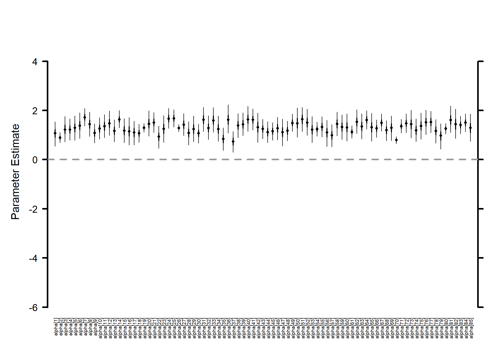
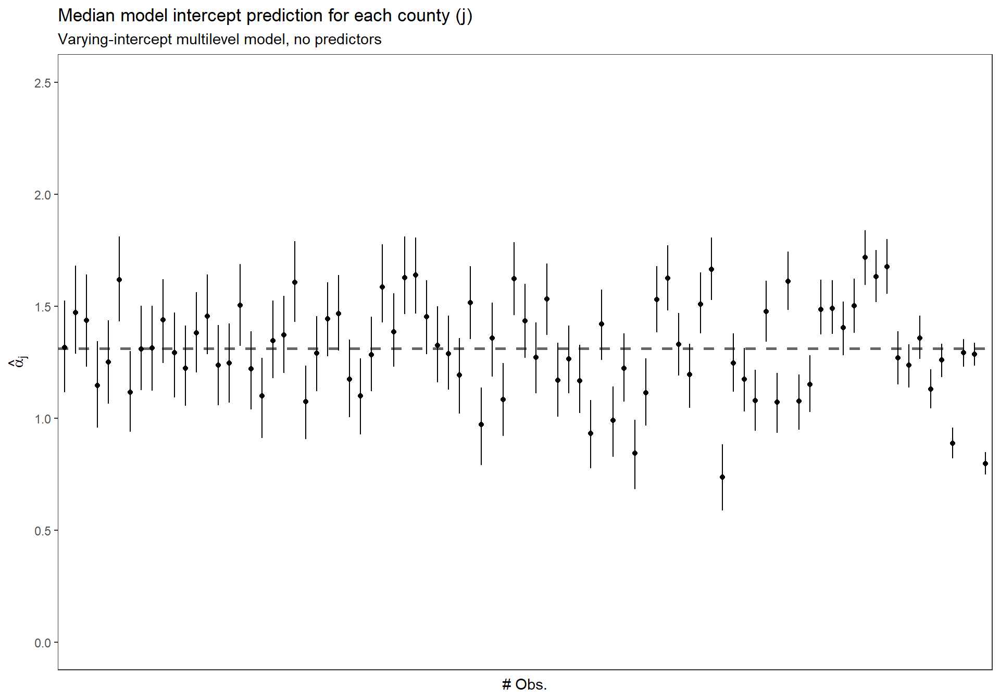
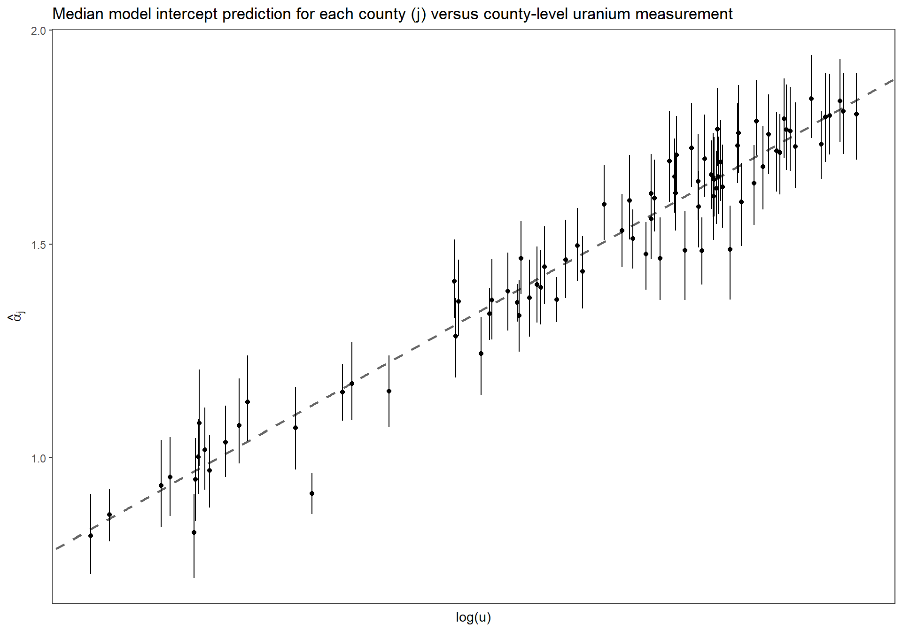

Chapter 3 Multilevel linear models: the basics (Ch 12)
This chapter starts on page 251
3.1 Setup
# bread-and-butter
library(tidyverse)
library(lubridate)
library(viridis)
library(scales)
library(latex2exp)
# visualization
library(cowplot)
library(kableExtra)
# Linear Mixed-Effects Models
library(lme4)
library(broom.mixed)
# jags and bayesian
library(rjags)
library(MCMCvis)
library(HDInterval)
library(BayesNSF)
#set seed
set.seed(11)3.2 Load data
# srrs2 <- read.table ("../data/radon/srrs2.dat", header=TRUE, sep=",")
srrs2 <- read.table ("http://www.stat.columbia.edu/~gelman/arm/examples/radon/srrs2.dat", header=TRUE, sep=",")
srrs2 %>%
dplyr::glimpse()Rows: 12,777
Columns: 25
$ idnum
# filter MN and create vars
radon_mn <- srrs2 %>%
dplyr::filter(
state=="MN"
) %>%
dplyr::mutate(
radon = activity
, log.radon = log(ifelse(radon==0, .1, radon))
, y = log.radon
, x = floor # 0 for basement, 1 for first floor
, county_index = as.numeric(as.factor(county))
)
# n
n <- nrow(radon_mn)
# count
radon_mn %>% dplyr::count(county_index, county) %>% dplyr::slice_head(n=10) %>%
kableExtra::kable(
caption = "Records by county (first 10)"
) %>%
kableExtra::kable_styling(font_size = 12) %>%
kableExtra::column_spec(1, bold = FALSE, width = "3em")| county_index | county | n |
|---|---|---|
| 1 | AITKIN | 4 |
| 2 | ANOKA | 52 |
| 3 | BECKER | 3 |
| 4 | BELTRAMI | 7 |
| 5 | BENTON | 4 |
| 6 | BIG STONE | 3 |
| 7 | BLUE EARTH | 14 |
| 8 | BROWN | 4 |
| 9 | CARLTON | 10 |
| 10 | CARVER | 6 |
3.3 Varying-intercept multilevel model, no predictors (p. 253)
\[ y_i = \alpha_{j[i]} + \epsilon_i \]
where \(j[i]\) is the county corresponding to house \(i\)
Partial-pooling estimates from a multilevel model: For this simple scenario with no predictors, the multilevel estimate for a given county \(j\) can be approximated as a weighted average of the mean of the observations in the county (the unpooled estimate, \(\overline{y}_j\)) and the mean over all counties (the completely pooled estimate, \(\overline{y}_{all}\)).
The weighted average reflects the relative amount of information available about the individual county, on one hand, and the average of all the counties, on the other:
- Averages from counties with smaller sample sizes carry less information, and the weighting pulls the multilevel estimates closer to the overall state average. In the limit, if \(n_j = 0\), the multilevel estimate is simply the overall average, \(\overline{y}_{all}\).
- Averages from counties with larger sample sizes carry more information, and the corresponding multilevel estimates are close to the county averages. In the limit as \(n_j \to \infty\), the multilevel estimate is simply the county average, \(\overline{y}_{j}\) .
- In intermediate cases, the multilevel estimate lies between the two extremes.
3.3.1 Data and Initial conditions
# varying-intercept model, no predictors
## data for jags
data <- list(
n = nrow(radon_mn)
, J = radon_mn$county %>% unique() %>% length()
, y = radon_mn$log.radon %>% as.double()
, county = radon_mn$county_index %>% as.double()
)
## inits for jags
inits <- function(){
list(
alpha = rnorm(n = data$J, mean = 0, sd = 1) # county-level intercept (n = length of # counties)
, mu.alpha = rnorm(n = 1, mean = 0, sd = 1)
, sigma.alpha = runif(n = 1, min = 0, max = 1)
, sigma.y = runif(n = 1, min = 0, max = 1)
)
}
# define parameters to return from MCMC
params <- c ("alpha", "mu.alpha", "sigma.y", "sigma.alpha")3.3.2 JAGS Model
Write out the JAGS code for the model.
## JAGS Model
model {
###########################
# priors
###########################
# alpha priors
mu.alpha ~ dnorm(0, .0001)
tau.alpha <- 1/sigma.alpha^2
sigma.alpha ~ dunif(0, 100)
for (j in 1:J){
alpha[j] ~ dnorm(mu.alpha, tau.alpha)
}
# y priors
sigma.y ~ dunif (0, 100)
tau.y <- 1/sigma.y^2
###########################
# likelihood
###########################
for (i in 1:n){
y[i] ~ dnorm(alpha[county[i]], tau.y)
}
}3.3.3 Implement JAGS Model
##################################################################
# insert JAGS model code into an R script
##################################################################
{ # Extra bracket needed only for R markdown files - see answers
sink("intrcpt_nopred.R") # This is the file name for the jags code
cat("
## JAGS Model
model {
###########################
# priors
###########################
# alpha priors
mu.alpha ~ dnorm(0, .0001)
tau.alpha <- 1/sigma.alpha^2
sigma.alpha ~ dunif(0, 100)
for (j in 1:J){
alpha[j] ~ dnorm(mu.alpha, tau.alpha)
}
# y priors
sigma.y ~ dunif (0, 100)
tau.y <- 1/sigma.y^2
###########################
# likelihood
###########################
for (i in 1:n){
y[i] ~ dnorm(alpha[county[i]], tau.y)
}
}
", fill = TRUE)
sink()
}
##################################################################
# implement model
##################################################################
######################
# Call to JAGS
######################
intrcpt_nopred = rjags::jags.model(
file = "intrcpt_nopred.R"
, data = data
, inits = inits
, n.chains = 3
, n.adapt = 100
)## Compiling model graph
## Resolving undeclared variables
## Allocating nodes
## Graph information:
## Observed stochastic nodes: 919
## Unobserved stochastic nodes: 88
## Total graph size: 1937
##
## Initializing modelstats::update(intrcpt_nopred, n.iter = 1000, progress.bar = "none")
# save the coda object (more precisely, an mcmc.list object) to R
mlm_intrcpt_nopred = rjags::coda.samples(
model = intrcpt_nopred
, variable.names = params
, n.iter = 1000
, n.thin = 1
, progress.bar = "none"
)3.3.4 Summary of the marginal posterior distributions of the parameters
# summary
MCMCvis::MCMCsummary(mlm_intrcpt_nopred, params = params[params != "alpha"]) %>%
kableExtra::kable(
caption = "Bayesian: arying-intercept multilevel model, no predictors"
, digits = 5
) %>%
kableExtra::kable_styling(font_size = 12)| mean | sd | 2.5% | 50% | 97.5% | Rhat | n.eff | |
|---|---|---|---|---|---|---|---|
| mu.alpha | 1.31334 | 0.05089 | 1.21890 | 1.31208 | 1.41740 | 1.00 | 917 |
| sigma.y | 0.79907 | 0.02004 | 0.76152 | 0.79811 | 0.84099 | 1.00 | 1499 |
| sigma.alpha | 0.32002 | 0.04695 | 0.23321 | 0.31726 | 0.41866 | 1.01 | 347 |
3.3.5 Make a horizontal caterpillar plot for the \(\alpha_{j}\)
# Caterpillar plots
MCMCvis::MCMCplot(
mlm_intrcpt_nopred
, params = c("alpha")
, horiz = FALSE
, ylim = c(-6,5)
# Number specifying size of text for parameter labels on axis.
, sz_labels = 0.6
# Number specifying size of points represents posterior medians.
, sz_med = 0.7
# Number specifying thickness of 50 percent CI line (thicker line).
, sz_thick = 2
# Number specifying thickness of 95 percent CI line (thinner line).
, sz_thin = 1
)
3.3.6 Sort the \(\alpha_{j}\) by number of obs.
Replicate Figure 12.1 (b) (p.253)
dta_temp <- dplyr::bind_cols(
radon_mn %>% dplyr::count(county_index) %>% data.frame()
, MCMCvis::MCMCpstr(mlm_intrcpt_nopred, params = "alpha", func = function(x) quantile(x, c(0.25, 0.5, 0.75))) %>%
data.frame() %>%
dplyr::rename_with(
~ tolower(gsub(".", "", .x, fixed = TRUE))
)
) %>%
dplyr::arrange(n) %>%
dplyr::mutate(n_low_hi = dplyr::row_number() %>% as.factor())
ggplot(dta_temp) +
geom_hline(
yintercept = MCMCvis::MCMCpstr(mlm_intrcpt_nopred, params = "mu.alpha", func = median) %>% unlist()
, linetype = "dashed"
, lwd = 1
, color = "gray40"
) +
geom_point(
mapping = aes(x = n_low_hi, y = alpha50)
) +
geom_linerange(
mapping = aes(x = n_low_hi, ymin = alpha25, ymax = alpha75)
) +
scale_y_continuous(limits = c(0,2.5)) +
ylab(latex2exp::TeX("$\\hat{\\alpha}_{j}$")) +
xlab("# Obs.") +
labs(
title = "Median model intercept prediction for each county (j)"
, subtitle = "Varying-intercept multilevel model, no predictors"
) +
theme_bw() +
theme(
axis.text.x = element_blank()
, axis.ticks.x = element_blank()
, panel.grid = element_blank()
)
3.4 Classical no-pooling with predictors (p. 254)
This section considers partial pooling for a model with unit-level predictors. In this scenario, no pooling might refer to fitting a separate regression model within each group. However, a less extreme and more common option that we also sometimes refer to as “no pooling” is a model that includes group indicators and estimates the model classically.
3.4.1 Fit no-pooling model with lm
\[ y_i = \alpha_{j[i]} + \beta\cdot x_i + \epsilon_i \]
where \(j[i]\) is the county corresponding to house \(i\); and \(x\) is the floor of measurement (0 = basement, 1 = 1st floor…)
To fit the no-pooling model in R, we include the county index (a variable named county that takes on values between 1 and 85) as a factor in the regression—thus, predictors for the 85 different counties. We add “−1” to the regression formula to remove the constant term, so that all 85 counties are included. Otherwise, R would use county 1 as a baseline.
In the no-pooling model, the \(\alpha_{j}\)’s are set to the classical least squares estimates, which correspond to the fitted intercepts in a model run separately in each county (with the constraint that the slope coefficient equals \(\beta\) in all models).
lm(data = radon_mn, formula = y ~ x + factor(county_index) - 1) %>%
broom::tidy() %>%
dplyr::slice_head(n=10) %>%
kableExtra::kable(
caption = "no-pooling model includes county indicators"
) %>%
kableExtra::kable_styling(font_size = 12) %>%
kableExtra::column_spec(1, bold = FALSE, width = "3em")| term | estimate | std.error | statistic | p.value |
|---|---|---|---|---|
| x | -0.7205390 | 0.0735232 | -9.800158 | 0.0000000 |
| factor(county_index)1 | 0.8405411 | 0.3786561 | 2.219801 | 0.0267009 |
| factor(county_index)2 | 0.8748191 | 0.1049822 | 8.333020 | 0.0000000 |
| factor(county_index)3 | 1.5286973 | 0.4394610 | 3.478573 | 0.0005302 |
| factor(county_index)4 | 1.5527222 | 0.2889702 | 5.373296 | 0.0000001 |
| factor(county_index)5 | 1.4325705 | 0.3786561 | 3.783302 | 0.0001658 |
| factor(county_index)6 | 1.5130101 | 0.4367190 | 3.464493 | 0.0005584 |
| factor(county_index)7 | 2.0121604 | 0.2024343 | 9.939820 | 0.0000000 |
| factor(county_index)8 | 1.9895765 | 0.3799921 | 5.235836 | 0.0000002 |
| factor(county_index)9 | 1.0030369 | 0.2393138 | 4.191304 | 0.0000307 |
3.5 Multilevel (partial pooling) model with predictors (p. 254)
The simplest multilevel model for the radon data with the floor predictor can be written as:
\[\begin{align*} y_i &\sim \textrm{N}(\alpha_{j[i]} + \beta\cdot x_i, \sigma^2) \\ \textrm{for} &\; i = 1, \cdots, n \end{align*}\]
which looks like the no-pooling model but with one key difference. In the no-pooling model, the \(\alpha_{j}\)’s are set to the classical least squares estimates, which correspond to the fitted intercepts in a model run separately in each county (with the constraint that the slope coefficient equals \(\beta\) in all models). In the multilevel model, a “soft constraint” is applied to the \(\alpha_{j}\)’s: they are assigned a probability distribution,
\[\begin{align*} \alpha_j &\sim \textrm{N}(\mu_{\alpha}, \sigma^{2}_{\alpha}) \\ \textrm{for} &\; j = 1, \cdots, J \end{align*}\]
with their mean \(\mu_{\alpha}\) and standard deviation \(\sigma^{2}_{\alpha}\) estimated from the data. The distribution (12.3) has the effect of pulling the estimates of \(\alpha_{j}\) toward the mean level \(\mu_{\alpha}\), but not all the way. (p. 257)
3.5.1 Using lme4::lmer
Approximate routines such as lmer() tend to work well when the sample size and number of groups is moderate to large, as in the radon models. When the number of groups is small, or the model becomes more complicated, it can be useful to switch to Bayesian inference, using the Bugs program, to better account for uncertainty in model fitting. (p. 262)
## Varying-intercept model w/ no predictors
M0 <- lme4::lmer(data = radon_mn, formula = y ~ 1 + (1 | county))
summary(M0)Linear mixed model fit by REML [‘lmerMod’] Formula: y ~ 1 + (1 | county) Data: radon_mn
REML criterion at convergence: 2259.4
Scaled residuals: Min 1Q Median 3Q Max -4.4661 -0.5734 0.0441 0.6432 3.3516
Random effects:
Groups Name Variance Std.Dev.
county (Intercept) 0.09581 0.3095
Residual 0.63662 0.7979
Number of obs: 919, groups: county, 85
Fixed effects: Estimate Std. Error t value (Intercept) 1.31258 0.04891 26.84
## Varying-intercept model w/ a predictor
## Including x as a predictor
# we can allow the slope to vary as well by specifying (1+x|county)
M1 <- lme4::lmer(data = radon_mn, formula = y ~ x + (1 | county))
summary(M1)Linear mixed model fit by REML [‘lmerMod’] Formula: y ~ x + (1 | county) Data: radon_mn
REML criterion at convergence: 2171.3
Scaled residuals: Min 1Q Median 3Q Max -4.3989 -0.6155 0.0029 0.6405 3.4281
Random effects:
Groups Name Variance Std.Dev.
county (Intercept) 0.1077 0.3282
Residual 0.5709 0.7556
Number of obs: 919, groups: county, 85
Fixed effects: Estimate Std. Error t value (Intercept) 1.46160 0.05158 28.339 x -0.69299 0.07043 -9.839
Correlation of Fixed Effects: (Intr) x -0.288
#estimated regression coefficicents
coef(M1)$county[1:3,1][1] 1.1915004 0.9276468 1.4792143
# fixed and random effects
fixef(M1)(Intercept) x 1.4615979 -0.6929937
ranef(M1)$county[1:3,1][1] -0.27009750 -0.53395107 0.01761646
# check intercept match for county 1
fixef(M1)[[1]] + ranef(M1)$county[1,1][1] 1.1915
coef(M1)$county[1,1][1] 1.1915
The estimated average regression line for all the counties is y = 1.462 - 0.693x
- \(\hat{\mu_{\alpha}}\) = 1.462
- \(\hat{\beta}\) = -0.693
3.5.2 Bayesian
3.5.2.1 Data and Initial conditions
# varying-intercept model, no predictors
## data for jags
data <- list(
n = nrow(radon_mn)
, J = radon_mn$county %>% unique() %>% length()
, y = radon_mn$log.radon %>% as.double()
, x = radon_mn$x %>% as.double()
, county = radon_mn$county_index %>% as.double()
)
## inits for jags
inits <- function(){
list(
alpha = rnorm(n = data$J, mean = 0, sd = 1) # county-level intercept (n = length of # counties)
, beta = rnorm(1, mean = 0, sd = 1)
, mu.alpha = rnorm(n = 1, mean = 0, sd = 1)
, sigma.alpha = runif(n = 1, min = 0, max = 1)
, sigma.y = runif(n = 1, min = 0, max = 1)
)
}
# define parameters to return from MCMC
params <- c ("alpha", "beta", "mu.alpha", "sigma.y", "sigma.alpha")3.5.2.2 JAGS Model
Write out the JAGS code for the model.
## JAGS Model
model {
###########################
# priors
###########################
# alpha priors
mu.alpha ~ dnorm(0, .0001)
tau.alpha <- 1/sigma.alpha^2
sigma.alpha ~ dunif(0, 100)
for (j in 1:J){
alpha[j] ~ dnorm(mu.alpha, tau.alpha)
}
# beta
beta ~ dnorm(0, .0001)
# y priors
sigma.y ~ dunif (0, 100)
tau.y <- 1/sigma.y^2
###########################
# likelihood
###########################
for (i in 1:n){
mu.y[i] <- alpha[county[i]] + beta * x[i]
y[i] ~ dnorm(mu.y[i], tau.y)
}
}3.5.2.3 Implement JAGS Model
##################################################################
# insert JAGS model code into an R script
##################################################################
{ # Extra bracket needed only for R markdown files - see answers
sink("intrcpt_pred.R") # This is the file name for the jags code
cat("
## JAGS Model
model {
###########################
# priors
###########################
# alpha priors
mu.alpha ~ dnorm(0, .0001)
tau.alpha <- 1/sigma.alpha^2
sigma.alpha ~ dunif(0, 100)
for (j in 1:J){
alpha[j] ~ dnorm(mu.alpha, tau.alpha)
}
# beta
beta ~ dnorm(0, .0001)
# y priors
sigma.y ~ dunif (0, 100)
tau.y <- 1/sigma.y^2
###########################
# likelihood
###########################
for (i in 1:n){
mu.y[i] <- alpha[county[i]] + beta * x[i]
y[i] ~ dnorm(mu.y[i], tau.y)
}
}
", fill = TRUE)
sink()
}
##################################################################
# implement model
##################################################################
######################
# Call to JAGS
######################
intrcpt_pred = rjags::jags.model(
file = "intrcpt_pred.R"
, data = data
, inits = inits
, n.chains = 3
, n.adapt = 100
)## Compiling model graph
## Resolving undeclared variables
## Allocating nodes
## Graph information:
## Observed stochastic nodes: 919
## Unobserved stochastic nodes: 89
## Total graph size: 3004
##
## Initializing modelstats::update(intrcpt_pred, n.iter = 1000, progress.bar = "none")
# save the coda object (more precisely, an mcmc.list object) to R
mlm_intrcpt_pred = rjags::coda.samples(
model = intrcpt_pred
, variable.names = params
, n.iter = 1000
, n.thin = 1
, progress.bar = "none"
)3.5.2.4 Summary of the marginal posterior distributions of the parameters
# summary
MCMCvis::MCMCsummary(mlm_intrcpt_pred, params = params[params != "alpha"]) %>%
kableExtra::kable(
caption = "Bayesian: Varying-intercept multilevel model, floor of measurement predictor"
, digits = 5
) %>%
kableExtra::kable_styling(font_size = 12)| mean | sd | 2.5% | 50% | 97.5% | Rhat | n.eff | |
|---|---|---|---|---|---|---|---|
| beta | -0.69438 | 0.07162 | -0.83674 | -0.69585 | -0.55709 | 1.00 | 1681 |
| mu.alpha | 1.46208 | 0.05088 | 1.36578 | 1.46066 | 1.56422 | 1.00 | 993 |
| sigma.y | 0.75703 | 0.01808 | 0.72243 | 0.75661 | 0.79333 | 1.00 | 1852 |
| sigma.alpha | 0.33622 | 0.04726 | 0.25141 | 0.33336 | 0.43294 | 1.01 | 400 |
Compare fully Bayesian approach to linear mixed-effects model (via Restricted Maximum Likelihood [REML])
# compare
MCMCvis::MCMCsummary(mlm_intrcpt_pred, params = "alpha") %>%
data.frame() %>%
dplyr::select("mean") %>%
dplyr::slice_head(n = 8) %>%
dplyr::bind_cols(coef(M1)$county[1:8,1]) %>%
dplyr::rename(Bayesian=1, LMM=2) %>%
kableExtra::kable(
caption = "alpha predictions Bayesian vs. LMM (lme4::lmer)"
, digits = 5
) %>%
kableExtra::kable_styling(font_size = 12)| Bayesian | LMM | |
|---|---|---|
| alpha[1] | 1.18763 | 1.19150 |
| alpha[2] | 0.92880 | 0.92765 |
| alpha[3] | 1.47446 | 1.47921 |
| alpha[4] | 1.51047 | 1.50450 |
| alpha[5] | 1.44529 | 1.44615 |
| alpha[6] | 1.48084 | 1.48018 |
| alpha[7] | 1.86534 | 1.85813 |
| alpha[8] | 1.68438 | 1.68277 |
3.5.2.5 Sort the \(\alpha_{j}\) by number of obs.
Replicate Figure 12.1 (b) for the partial pooling with predictors model (p.253)
dta_temp <- dplyr::bind_cols(
radon_mn %>% dplyr::count(county_index) %>% data.frame()
, MCMCvis::MCMCpstr(mlm_intrcpt_pred, params = "alpha", func = function(x) quantile(x, c(0.25, 0.5, 0.75))) %>%
data.frame() %>%
dplyr::rename_with(
~ tolower(gsub(".", "", .x, fixed = TRUE))
)
) %>%
dplyr::arrange(n) %>%
dplyr::mutate(n_low_hi = dplyr::row_number() %>% as.factor())
ggplot(dta_temp) +
geom_hline(
yintercept = MCMCvis::MCMCpstr(mlm_intrcpt_pred, params = "mu.alpha", func = median) %>% unlist()
, linetype = "dashed"
, lwd = 1
, color = "gray40"
) +
geom_point(
mapping = aes(x = n_low_hi, y = alpha50)
) +
geom_linerange(
mapping = aes(x = n_low_hi, ymin = alpha25, ymax = alpha75)
) +
scale_y_continuous(limits = c(0,2.5)) +
ylab(latex2exp::TeX("$\\hat{\\alpha}_{j}$")) +
xlab("# Obs.") +
labs(
title = "Median model intercept prediction for each county (j)"
, subtitle = "Varying-intercept multilevel model, floor of measurement predictor"
) +
theme_bw() +
theme(
axis.text.x = element_blank()
, axis.ticks.x = element_blank()
, panel.grid = element_blank()
)3.6 Group-level predictors (p. 265)
Adding a group-level predictor to improve inference for group coefficients \(\alpha_j\). This multilevel model includes predictors at the group (e.g. county) as well as the individual (e.g. house) level.
\[\begin{align*} y_i &\sim \textrm{N}(\alpha_{j[i]} + \beta\cdot x_i, \sigma^2) \; \textrm{for} \; i = 1, \cdots, n \\ \alpha_j &\sim \textrm{N}(\gamma_{0} + \gamma_{1} \cdot u_j, \sigma^{2}_{\alpha}) \; \textrm{for} \; j = 1, \cdots, J \end{align*}\]
where \(x_i\) is the house-level first-floor indicator and \(u_j\) is the county-level uranium measure.
3.6.1 Using lme4::lmer
Approximate routines such as lmer() tend to work well when the sample size and number of groups is moderate to large, as in the radon models. When the number of groups is small, or the model becomes more complicated, it can be useful to switch to Bayesian inference, using the Bugs program, to better account for uncertainty in model fitting. (p. 262)
3.6.1.1 Data prep
Attach measurements of uranium at the county level to data of radon measurements at the individual house level.
# combine state and county fips in full radon data
srrs2 <- srrs2 %>%
dplyr::mutate(fullfips = stfips*1000 + cntyfips)
radon_mn <- radon_mn %>%
dplyr::mutate(fullfips = stfips*1000 + cntyfips)
# load county data
cty <- read.table ("http://www.stat.columbia.edu/~gelman/arm/examples/radon/cty.dat", header=TRUE, sep=",") %>%
dplyr::mutate(fullfips = stfips*1000 + ctfips) %>%
# there are duplicates in this data
dplyr::group_by(fullfips) %>%
dplyr::filter(dplyr::row_number()==1) %>%
dplyr::ungroup() %>%
dplyr::mutate(u = log(Uppm))
# glimpse
cty %>% dplyr::glimpse()## Rows: 3,111
## Columns: 9
## $ stfips <int> 1, 1, 1, 1, 1, 1, 1, 1, 1, 1, 1, 1, 1, 1, 1, 1, 1, 1, 1, 1, 1~
## $ ctfips <int> 1, 3, 5, 7, 9, 11, 13, 15, 17, 19, 21, 23, 25, 27, 29, 31, 33~
## $ st <chr> "AL", "AL", "AL", "AL", "AL", "AL", "AL", "AL", "AL", "AL", "~
## $ cty <chr> "AUTAUGA", "BALDWIN", "BARBOUR", "BIBB", "BLOUNT", "BULLOCK",~
## $ lon <dbl> -86.643, -87.750, -85.393, -87.126, -86.568, -85.716, -86.680~
## $ lat <dbl> 32.534, 30.661, 31.870, 32.998, 33.981, 32.100, 31.752, 33.77~
## $ Uppm <dbl> 1.78331, 1.38323, 2.10105, 1.67313, 1.88501, 2.46112, 1.91714~
## $ fullfips <dbl> 1001, 1003, 1005, 1007, 1009, 1011, 1013, 1015, 1017, 1019, 1~
## $ u <dbl> 0.5784712, 0.3244213, 0.7424372, 0.5146961, 0.6339331, 0.9006~# join to individual, house radon measurement data
srrs2 <- srrs2 %>%
dplyr::left_join(cty %>% dplyr::select(fullfips, u), by = c("fullfips"="fullfips"))
radon_mn <- radon_mn %>%
dplyr::left_join(cty %>% dplyr::select(fullfips, u), by = c("fullfips"="fullfips"))
# # unique uranium by county index 1:85
u <- radon_mn %>%
dplyr::group_by(county_index) %>%
summarize(u = dplyr::first(u)) %>%
ungroup() %>%
dplyr::arrange(county_index)Varying-intercept model with predictors (i.e. soil uranium measuement) at the group level (i.e. county)
## Varying-intercept model w/ group-level predictors
# M1 <- lme4::lmer(data = radon_mn, formula = y ~ x + (1 | county))
M2 <- lme4::lmer(data = radon_mn, formula = y ~ x + u + (1 | county))
summary(M2)Linear mixed model fit by REML [‘lmerMod’] Formula: y ~ x + u + (1 | county) Data: radon_mn
REML criterion at convergence: 2134.2
Scaled residuals: Min 1Q Median 3Q Max -4.9673 -0.6117 0.0274 0.6555 3.3848
Random effects:
Groups Name Variance Std.Dev.
county (Intercept) 0.02446 0.1564
Residual 0.57523 0.7584
Number of obs: 919, groups: county, 85
Fixed effects: Estimate Std. Error t value (Intercept) 1.46576 0.03794 38.633 x -0.66824 0.06880 -9.713 u 0.72027 0.09176 7.849
Correlation of Fixed Effects:
(Intr) x
x -0.357
u 0.145 -0.009
#estimated regression coefficicents
coef(M2)$county[1:3,] (Intercept) x uAITKIN 1.445120 -0.6682448 0.7202676 ANOKA 1.477009 -0.6682448 0.7202676 BECKER 1.478185 -0.6682448 0.7202676
# fixed and random effects
fixef(M2)(Intercept) x u 1.4657628 -0.6682448 0.7202676
ranef(M2)$county[1:3,][1] -0.02064236 0.01124577 0.01242203
# check intercept match for county 1
fixef(M2)[[1]] + ranef(M2)$county[1,1][1] 1.44512
coef(M2)$county[1,1][1] 1.44512
The estimated average regression line for all the counties is y = 1.466 - 0.668x + 0.72u (see p.268)
- \(\hat{\beta}\) = -0.668
- \(\hat{\gamma_{0}}\) = 1.466
- \(\hat{\gamma_{1}}\) = 0.72
3.6.2 Bayesian
3.6.2.1 Data and Initial conditions
# varying-intercept model, no predictors
## data for jags
data <- list(
n = nrow(radon_mn)
, J = radon_mn$county %>% unique() %>% length()
, y = radon_mn$log.radon %>% as.double()
, x = radon_mn$x %>% as.double()
, county = radon_mn$county_index %>% as.double()
, u = u$u %>% as.double()
)
## inits for jags
inits <- function(){
list(
alpha = rnorm(n = data$J, mean = 0, sd = 1) # county-level intercept (n = length of # counties)
, beta = rnorm(1, mean = 0, sd = 1)
, gamma_0 = rnorm(1, mean = 0, sd = 1)
, gamma_1 = rnorm(1, mean = 0, sd = 1)
, sigma.alpha = runif(n = 1, min = 0, max = 1)
, sigma.y = runif(n = 1, min = 0, max = 1)
)
}
# define parameters to return from MCMC
params <- c ("alpha", "beta", "gamma_0", "gamma_1", "sigma.y", "sigma.alpha")3.6.2.2 JAGS Model
Recall model defined above
Write out the JAGS code for the model.
## JAGS Model
model {
###########################
# priors
###########################
# alpha priors
gamma_0 ~ dnorm (0, .0001)
gamma_1 ~ dnorm (0, .0001)
sigma.alpha ~ dunif(0, 100)
tau.alpha <- 1/sigma.alpha^2
# beta
beta ~ dnorm(0, .0001)
# y priors
sigma.y ~ dunif (0, 100)
tau.y <- 1/sigma.y^2
###########################
# likelihood
###########################
# intercept (alpha) likelihood
# represent the effect of soil carbon ...
# ...on the intercept using the deterministic model below to predict alpha_j
for(j in 1:J){
mu_alpha[j] <- gamma_0 + gamma_1 * u[j]
alpha[j] ~ dnorm(mu_alpha[j], tau.alpha)
}
# y
for (i in 1:n){
mu.y[i] <- alpha[county[i]] + beta * x[i]
y[i] ~ dnorm(mu.y[i], tau.y)
}
}3.6.2.3 Implement JAGS Model
##################################################################
# insert JAGS model code into an R script
##################################################################
{ # Extra bracket needed only for R markdown files - see answers
sink("intrcpt_grp_pred.R") # This is the file name for the jags code
cat("
## JAGS Model
model {
###########################
# priors
###########################
# alpha priors
gamma_0 ~ dnorm (0, .0001)
gamma_1 ~ dnorm (0, .0001)
sigma.alpha ~ dunif(0, 100)
tau.alpha <- 1/sigma.alpha^2
# beta
beta ~ dnorm(0, .0001)
# y priors
sigma.y ~ dunif (0, 100)
tau.y <- 1/sigma.y^2
###########################
# likelihood
###########################
# intercept (alpha) likelihood
# represent the effect of soil carbon ...
# ...on the intercept using the deterministic model below to predict alpha_j
for(j in 1:J){
mu_alpha[j] <- gamma_0 + gamma_1 * u[j]
alpha[j] ~ dnorm(mu_alpha[j], tau.alpha)
}
# y
for (i in 1:n){
mu.y[i] <- alpha[county[i]] + beta * x[i]
y[i] ~ dnorm(mu.y[i], tau.y)
}
}
", fill = TRUE)
sink()
}
##################################################################
# implement model
##################################################################
######################
# Call to JAGS
######################
intrcpt_grp_pred = rjags::jags.model(
file = "intrcpt_grp_pred.R"
, data = data
, inits = inits
, n.chains = 3
, n.adapt = 100
)## Compiling model graph
## Resolving undeclared variables
## Allocating nodes
## Graph information:
## Observed stochastic nodes: 919
## Unobserved stochastic nodes: 90
## Total graph size: 3260
##
## Initializing modelstats::update(intrcpt_grp_pred, n.iter = 1000, progress.bar = "none")
# save the coda object (more precisely, an mcmc.list object) to R
mlm_intrcpt_grp_pred = rjags::coda.samples(
model = intrcpt_grp_pred
, variable.names = params
, n.iter = 1000
, n.thin = 1
, progress.bar = "none"
)3.6.2.4 Summary of the marginal posterior distributions of the parameters
# summary
MCMCvis::MCMCsummary(mlm_intrcpt_grp_pred, params = params[params != "alpha"]) %>%
kableExtra::kable(
caption = "Bayesian: Varying-intercept multilevel model, floor of measurement predictor + county-level (grp) uranium"
, digits = 5
) %>%
kableExtra::kable_styling(font_size = 12)| mean | sd | 2.5% | 50% | 97.5% | Rhat | n.eff | |
|---|---|---|---|---|---|---|---|
| beta | -0.66733 | 0.06877 | -0.80249 | -0.66910 | -0.53046 | 1.00 | 1376 |
| gamma_0 | 1.46190 | 0.03776 | 1.39075 | 1.46179 | 1.53960 | 1.00 | 308 |
| gamma_1 | 0.71171 | 0.08879 | 0.52870 | 0.71183 | 0.88081 | 1.01 | 436 |
| sigma.y | 0.75968 | 0.01795 | 0.72557 | 0.75940 | 0.79665 | 1.00 | 1486 |
| sigma.alpha | 0.15028 | 0.04803 | 0.06618 | 0.14844 | 0.24821 | 1.04 | 88 |
Compare fully Bayesian approach to linear mixed-effects model (via Restricted Maximum Likelihood [REML])
# compare
MCMCvis::MCMCsummary(mlm_intrcpt_grp_pred, params = "alpha") %>%
data.frame() %>%
dplyr::select("mean") %>%
dplyr::slice_head(n = 8) %>%
dplyr::bind_cols(coef(M2)$county[1:8,"(Intercept)"]) %>%
dplyr::rename(Bayesian=1, LMM=2) %>%
kableExtra::kable(
caption = "alpha predictions Bayesian vs. LMM (lme4::lmer)"
, digits = 5
) %>%
kableExtra::kable_styling(font_size = 12)| Bayesian | LMM | |
|---|---|---|
| alpha[1] | 0.95048 | 1.44512 |
| alpha[2] | 0.86629 | 1.47701 |
| alpha[3] | 1.39381 | 1.47818 |
| alpha[4] | 1.14251 | 1.57689 |
| alpha[5] | 1.37319 | 1.47400 |
| alpha[6] | 1.70965 | 1.43957 |
| alpha[7] | 1.77698 | 1.59387 |
| alpha[8] | 1.69840 | 1.50905 |
3.6.2.5 Estimated \(\alpha_{j}\) versus uranium measurment
Replicate Figure 12.6 for the multilevel model fit to radon data including uranium as a county-level predictor (p.266)
MCMCvis::MCMCpstr(mlm_intrcpt_grp_pred, params = "gamma_0", func = median) %>% unlist() + 1## gamma_0
## 2.461785dta_temp <- dplyr::bind_cols(
u
, MCMCvis::MCMCpstr(mlm_intrcpt_grp_pred, params = "alpha", func = function(x) quantile(x, c(0.25, 0.5, 0.75))) %>%
data.frame() %>%
dplyr::rename_with(
~ tolower(gsub(".", "", .x, fixed = TRUE))
)
) %>%
dplyr::arrange(county_index)
ggplot(dta_temp, mapping = aes(x = u)) +
geom_abline(
intercept = MCMCvis::MCMCpstr(mlm_intrcpt_grp_pred, params = "gamma_0", func = median) %>% unlist()
, slope = MCMCvis::MCMCpstr(mlm_intrcpt_grp_pred, params = "gamma_1", func = median) %>% unlist()
, linetype = "dashed"
, lwd = 1
, color = "gray40"
) +
geom_linerange(
mapping = aes(ymin = alpha25, ymax = alpha75)
) +
geom_point(
mapping = aes(y = alpha50)
) +
# scale_y_continuous(limits = c(0,2.5)) +
ylab(latex2exp::TeX("$\\hat{\\alpha}_{j}$")) +
xlab("log(u)") +
labs(
title = "Median model intercept prediction for each county (j) versus county-level uranium measurement"
) +
theme_bw() +
theme(
axis.text.x = element_blank()
, axis.ticks.x = element_blank()
, panel.grid = element_blank()
)
Estimated county coefficients \(\alpha_j\) plotted versus county-level uranium measurement \(u_j\), along with the estimated multilevel regression line \(\alpha_j = \gamma_{0} + \gamma_{1} \cdot u_j\). The county coefficients roughly follow the line but not exactly; the deviation of the coefficients from the line is captured in \(\sigma_{\alpha}\), the standard deviation of the errors in the county-level regression.